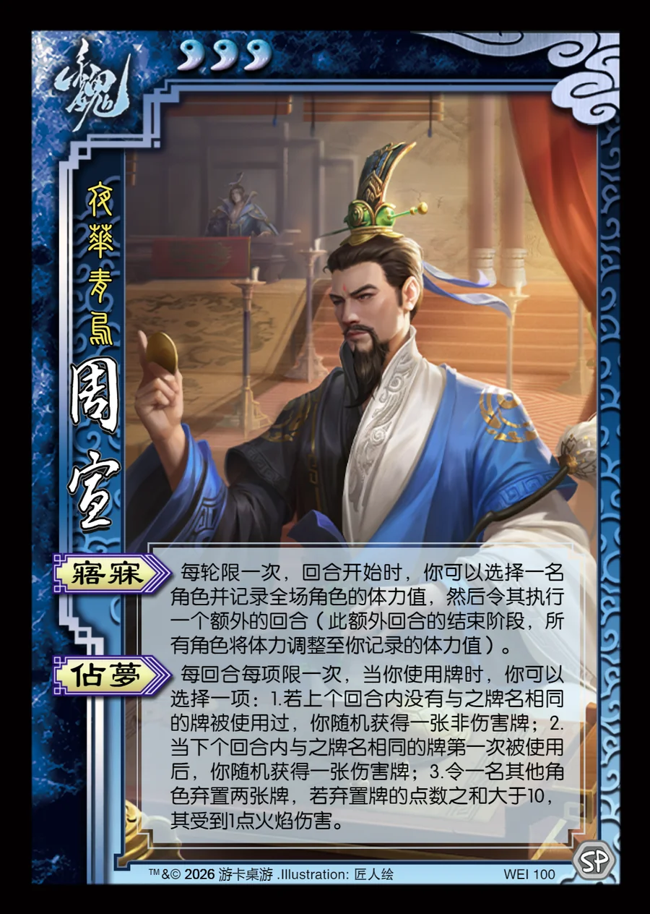

点击卡面查看大图
魏
周宣
♥3夜华青乌
寤寐
每轮限一次，回合开始时，你可以选择一名角色并记录全场角色的体力值，然后令其执行一个额外的回合（此额外回合的结束阶段，所有角色将体力调整至你记录的体力值）。
占梦
每回合每项限一次，当你使用牌时，你可以选择一项：1.若上个回合内没有与之牌名相同的牌被使用过，你随机获得一张非伤害牌；2.当下个回合内与之牌名相同的牌第一次被使用后，你随机获得一张伤害牌；3.令一名其他角色弃置两张牌，若弃置牌的点数之和大于10，其受到1点火焰伤害。